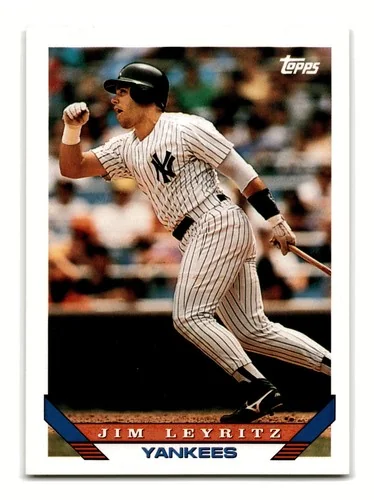

Jim Leyritz "The King"
Career Highlights & Facts
(Facts are AI-generated and may require verification)
- Versatile defender who logged significant innings at both catcher and multiple infield positions.
- Delivered a legendary game-tying home run in the 8th inning of a pivotal World Series contest.
- Earned multiple championship rings while contributing as a key postseason power threat.
Would you like to find out more about Jim Leyritz?
Player Biography
Jim Leyritz January 4, 2012 / in BioProject - Person / by admin This bio is not assigned. Want to write a SABR bio? Contact bioproject@sabr.org . No items found Full Name James Joseph Leyritz Born December 27, 1963 at Lakewood, OH (USA) Stats Baseball Reference Retrosheet If you can help us improve this player’s biography, contact us . Tags None Share this entry Share on Facebook Share on X Share on LinkedIn Share on Reddit Share by Mail
Wikipedia Summary:
James Joseph Leyritz is an American former professional baseball catcher and infielder. In his 11-year Major League Baseball (MLB) career, Leyritz played for the New York Yankees, Anaheim Angels, Texas Rangers, Boston Red Sox, San Diego Padres, and Los Angeles Dodgers. With the Yankees, Leyritz was a member of the 1996 and 1999 World Series championships, both over the Atlanta Braves.
Career Totals
| WAR | AB | H | HR | BA | R | RBI | SB | OBP | SLG | OPS | OPS+ |
|---|---|---|---|---|---|---|---|---|---|---|---|
| 8.0 | 2527 | 667 | 90 | .264 | 325 | 387 | 7 | .362 | .415 | .777 | 106 |
Statistics via Baseball-Reference.com
The Original Clue